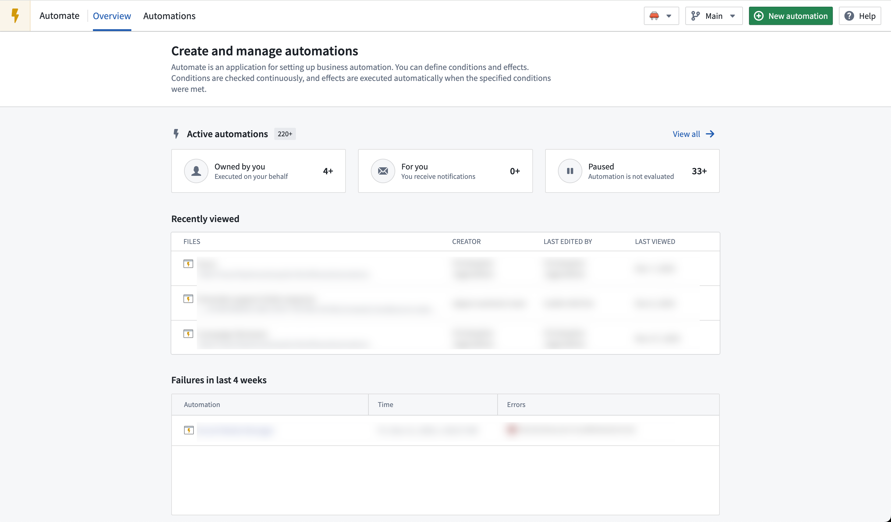
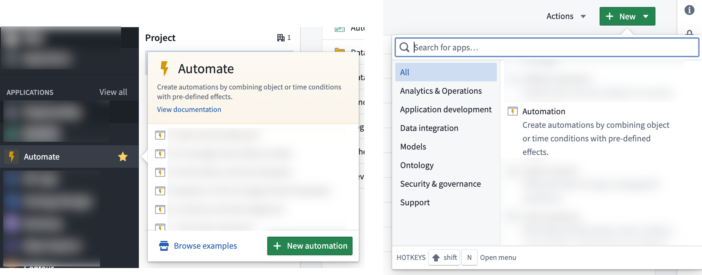
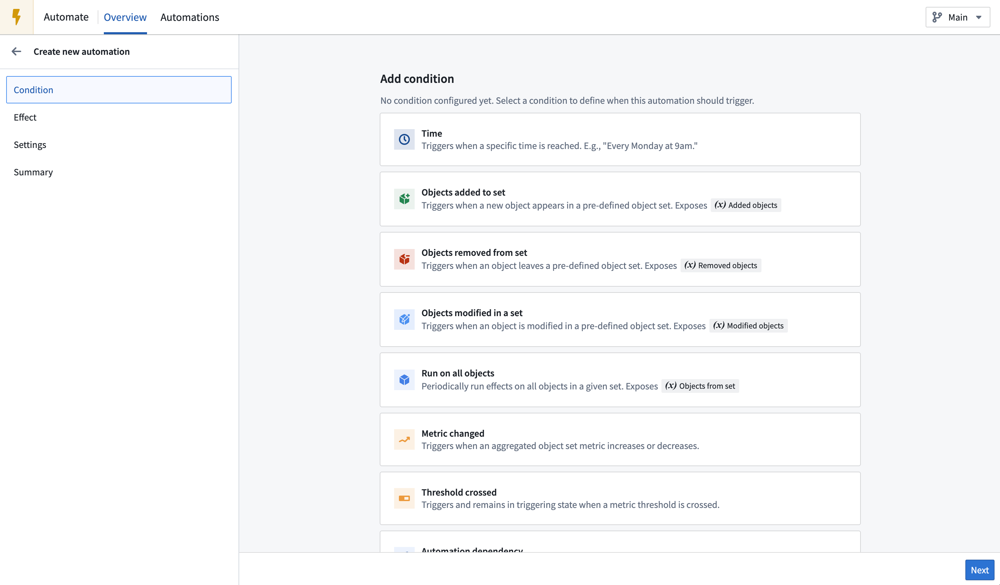
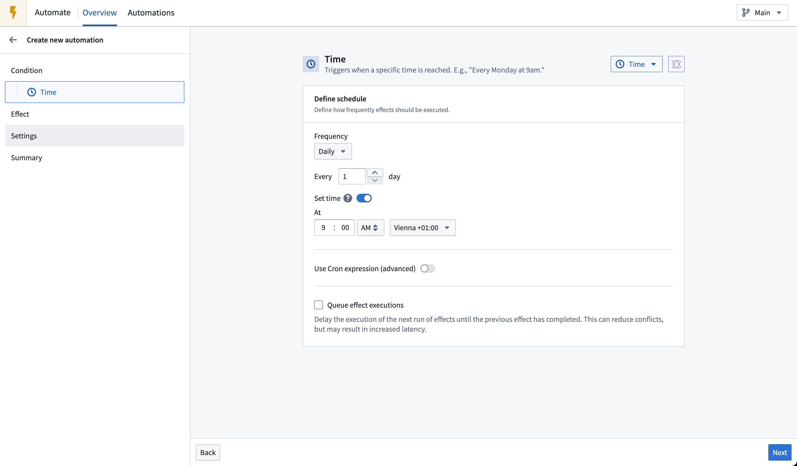
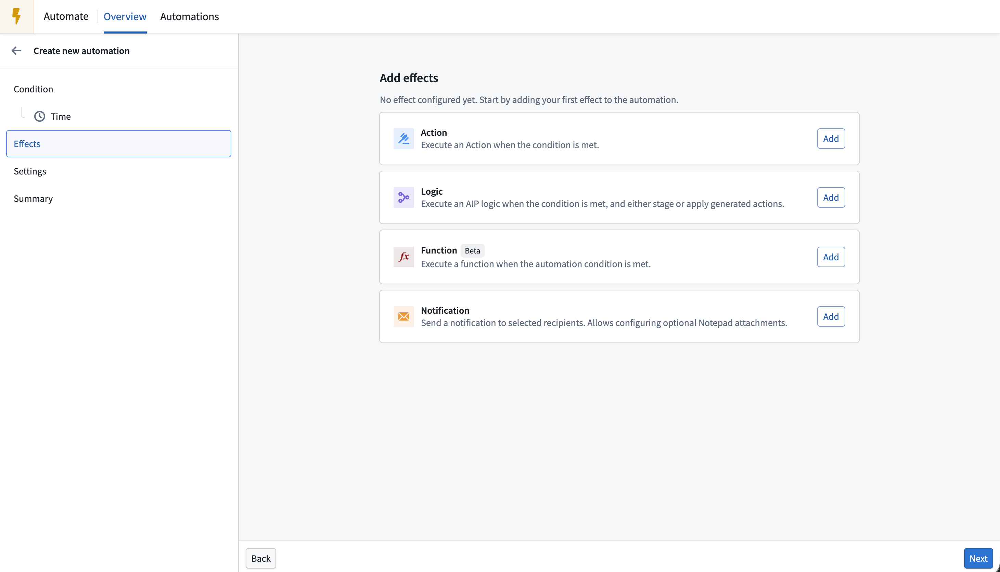
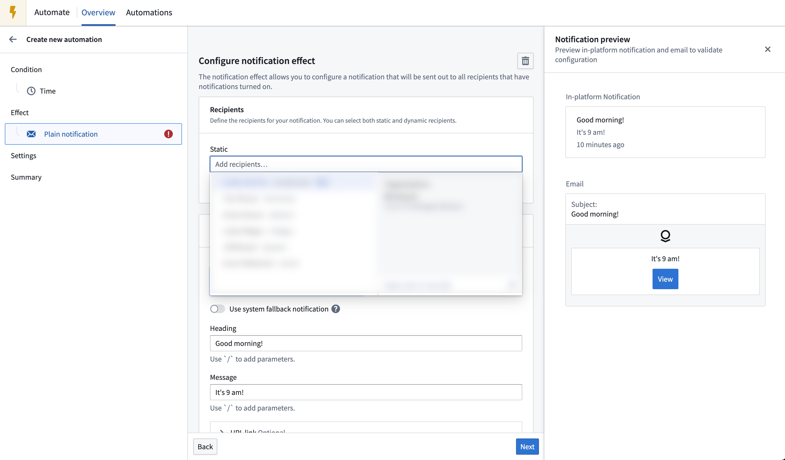
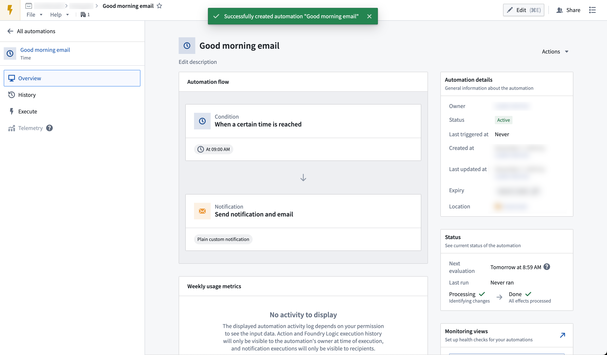
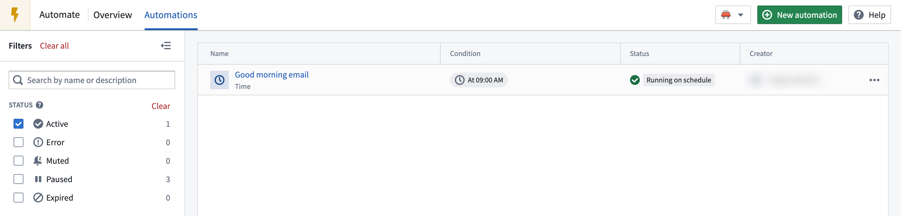

:::callout{theme="neutral"} This tutorial assumes you already have data integrated into your Foundry Ontology. If you have not yet done this, learn how to create your Ontology. :::
This tutorial will walk you through creating your first simple automation with the Automate application.
Start by opening the Automate application from the application sidebar. This will take you to the Overview page of the Automate application.
The Overview page shows a list of your recent automation activity, including counts of total automations you can see, automations owned by you, automations of which you are a recipient, and paused automations. You can also see lists of recently viewed automations, failures within the last four weeks, and recently triggered automations.

To create your first automation, select + New automation in the top right of the page. Alternatively, you can:

You will be taken to the automation creation wizard (shown below) where you can start to define your automation conditions. In this example, you will add a simple Time condition.

For now, leave the time configuration page as is and continue on to the Effect page by selecting Next as shown in the image below.

From the Effect page, you can add one or more effects to execute when the time condition is met. Choose Add on the Notification card to proceed to the Notification effect configuration page.

The notification effect offers many configuration options. For now, add yourself as a static recipient in the Recipients text input. Define a heading and message for your notification, then choose Preview to view how the message will appear to recipients. Select Next to return to the Effect page.

You can choose to add additional effects to your notification, but for this example you will continue to the automation Summary page by selecting Next again.
The Summary page shows a condensed view of the conditions and effects configured for your automation. Select Create automation to add a file name, save location, and expiration date (Indefinitely, Immediately, or Until a certain date), and permissions for the automation.
Upon successful creation, you will be redirected to the detail screen of your newly created automation, where a success banner will be displayed.
Select the Automate icon in the top toolbar to return to the Automate overview page. The Recent activities section will populate with events once your automations trigger.

To inspect your newly created automation, navigate to the Automations tab to view the table of all automations visible with your current permissions. Use the filter pane on the left to search for specific automations, such as the one you just created.

For more information about configuration options, review the various conditions and effects documentation. Alternatively, explore the examples section for more complex Automate use cases.